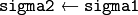

Image Filtering¶
Functions and classes described in this section are used to perform various linear or non-linear filtering operations on 2D images.
Note
- An example containing all basic morphology operators like erode and dilate can be found at opencv_source_code/samples/gpu/morphology.cpp
gpu::BaseRowFilter_GPU¶
-
class
gpu::BaseRowFilter_GPU¶
Base class for linear or non-linear filters that processes rows of 2D arrays. Such filters are used for the “horizontal” filtering passes in separable filters.
class BaseRowFilter_GPU
{
public:
BaseRowFilter_GPU(int ksize_, int anchor_);
virtual ~BaseRowFilter_GPU() {}
virtual void operator()(const GpuMat& src, GpuMat& dst, Stream& stream = Stream::Null()) = 0;
int ksize, anchor;
};
Note
This class does not allocate memory for a destination image. Usually this class is used inside gpu::FilterEngine_GPU.
gpu::BaseColumnFilter_GPU¶
-
class
gpu::BaseColumnFilter_GPU¶
Base class for linear or non-linear filters that processes columns of 2D arrays. Such filters are used for the “vertical” filtering passes in separable filters.
class BaseColumnFilter_GPU
{
public:
BaseColumnFilter_GPU(int ksize_, int anchor_);
virtual ~BaseColumnFilter_GPU() {}
virtual void operator()(const GpuMat& src, GpuMat& dst, Stream& stream = Stream::Null()) = 0;
int ksize, anchor;
};
Note
This class does not allocate memory for a destination image. Usually this class is used inside gpu::FilterEngine_GPU.
gpu::BaseFilter_GPU¶
-
class
gpu::BaseFilter_GPU¶
Base class for non-separable 2D filters.
class CV_EXPORTS BaseFilter_GPU
{
public:
BaseFilter_GPU(const Size& ksize_, const Point& anchor_);
virtual ~BaseFilter_GPU() {}
virtual void operator()(const GpuMat& src, GpuMat& dst, Stream& stream = Stream::Null()) = 0;
Size ksize;
Point anchor;
};
Note
This class does not allocate memory for a destination image. Usually this class is used inside gpu::FilterEngine_GPU.
gpu::FilterEngine_GPU¶
-
class
gpu::FilterEngine_GPU¶
Base class for the Filter Engine.
class CV_EXPORTS FilterEngine_GPU
{
public:
virtual ~FilterEngine_GPU() {}
virtual void apply(const GpuMat& src, GpuMat& dst,
Rect roi = Rect(0,0,-1,-1), Stream& stream = Stream::Null()) = 0;
};
The class can be used to apply an arbitrary filtering operation to an image. It contains all the necessary intermediate buffers. Pointers to the initialized FilterEngine_GPU instances are returned by various create*Filter_GPU functions (see below), and they are used inside high-level functions such as gpu::filter2D(), gpu::erode(), gpu::Sobel() , and others.
By using FilterEngine_GPU instead of functions you can avoid unnecessary memory allocation for intermediate buffers and get better performance:
while (...)
{
gpu::GpuMat src = getImg();
gpu::GpuMat dst;
// Allocate and release buffers at each iterations
gpu::GaussianBlur(src, dst, ksize, sigma1);
}
// Allocate buffers only once
cv::Ptr<gpu::FilterEngine_GPU> filter =
gpu::createGaussianFilter_GPU(CV_8UC4, ksize, sigma1);
while (...)
{
gpu::GpuMat src = getImg();
gpu::GpuMat dst;
filter->apply(src, dst, cv::Rect(0, 0, src.cols, src.rows));
}
// Release buffers only once
filter.release();
FilterEngine_GPU can process a rectangular sub-region of an image. By default, if roi == Rect(0,0,-1,-1) , FilterEngine_GPU processes the inner region of an image ( Rect(anchor.x, anchor.y, src_size.width - ksize.width, src_size.height - ksize.height) ) because some filters do not check whether indices are outside the image for better performance. See below to understand which filters support processing the whole image and which do not and identify image type limitations.
Note
The GPU filters do not support the in-place mode.
See also
gpu::BaseRowFilter_GPU, gpu::BaseColumnFilter_GPU, gpu::BaseFilter_GPU, gpu::createFilter2D_GPU(), gpu::createSeparableFilter_GPU(), gpu::createBoxFilter_GPU(), gpu::createMorphologyFilter_GPU(), gpu::createLinearFilter_GPU(), gpu::createSeparableLinearFilter_GPU(), gpu::createDerivFilter_GPU(), gpu::createGaussianFilter_GPU()
gpu::createFilter2D_GPU¶
Creates a non-separable filter engine with the specified filter.
-
C++:
gpu::createFilter2D_GPU(const Ptr<BaseFilter_GPU>& filter2D, int srcType, int dstType)¶ Parameters: - filter2D – Non-separable 2D filter.
- srcType – Input image type. It must be supported by
filter2D. - dstType – Output image type. It must be supported by
filter2D.
Usually this function is used inside such high-level functions as gpu::createLinearFilter_GPU(), gpu::createBoxFilter_GPU().
gpu::createSeparableFilter_GPU¶
Creates a separable filter engine with the specified filters.
-
C++:
gpu::createSeparableFilter_GPU(const Ptr<BaseRowFilter_GPU>& rowFilter, const Ptr<BaseColumnFilter_GPU>& columnFilter, int srcType, int bufType, int dstType)¶ Parameters: - rowFilter – “Horizontal” 1D filter.
- columnFilter – “Vertical” 1D filter.
- srcType – Input image type. It must be supported by
rowFilter. - bufType – Buffer image type. It must be supported by
rowFilterandcolumnFilter. - dstType – Output image type. It must be supported by
columnFilter.
Usually this function is used inside such high-level functions as gpu::createSeparableLinearFilter_GPU().
gpu::getRowSumFilter_GPU¶
Creates a horizontal 1D box filter.
-
C++:
gpu::getRowSumFilter_GPU(int srcType, int sumType, int ksize, int anchor=-1)¶ Parameters: - srcType – Input image type. Only
CV_8UC1type is supported for now. - sumType – Output image type. Only
CV_32FC1type is supported for now. - ksize – Kernel size.
- anchor – Anchor point. The default value (-1) means that the anchor is at the kernel center.
- srcType – Input image type. Only
Note
This filter does not check out-of-border accesses, so only a proper sub-matrix of a bigger matrix has to be passed to it.
gpu::getColumnSumFilter_GPU¶
Creates a vertical 1D box filter.
-
C++:
gpu::getColumnSumFilter_GPU(int sumType, int dstType, int ksize, int anchor=-1)¶ Parameters: - sumType – Input image type. Only
CV_8UC1type is supported for now. - dstType – Output image type. Only
CV_32FC1type is supported for now. - ksize – Kernel size.
- anchor – Anchor point. The default value (-1) means that the anchor is at the kernel center.
- sumType – Input image type. Only
Note
This filter does not check out-of-border accesses, so only a proper sub-matrix of a bigger matrix has to be passed to it.
gpu::createBoxFilter_GPU¶
Creates a normalized 2D box filter.
-
C++:
gpu::createBoxFilter_GPU(int srcType, int dstType, const Size& ksize, const Point& anchor=Point(-1,-1))¶
-
C++:
gpu::getBoxFilter_GPU(int srcType, int dstType, const Size& ksize, Point anchor=Point(-1, -1))¶ Parameters: - srcType – Input image type supporting
CV_8UC1andCV_8UC4. - dstType – Output image type. It supports only the same values as the source type.
- ksize – Kernel size.
- anchor – Anchor point. The default value
Point(-1, -1)means that the anchor is at the kernel center.
- srcType – Input image type supporting
Note
This filter does not check out-of-border accesses, so only a proper sub-matrix of a bigger matrix has to be passed to it.
See also
gpu::boxFilter¶
Smooths the image using the normalized box filter.
-
C++:
gpu::boxFilter(const GpuMat& src, GpuMat& dst, int ddepth, Size ksize, Point anchor=Point(-1,-1), Stream& stream=Stream::Null())¶ Parameters: - src – Input image.
CV_8UC1andCV_8UC4source types are supported. - dst – Output image type. The size and type is the same as
src. - ddepth – Output image depth. If -1, the output image has the same depth as the input one. The only values allowed here are
CV_8Uand -1. - ksize – Kernel size.
- anchor – Anchor point. The default value
Point(-1, -1)means that the anchor is at the kernel center. - stream – Stream for the asynchronous version.
- src – Input image.
Note
This filter does not check out-of-border accesses, so only a proper sub-matrix of a bigger matrix has to be passed to it.
See also
gpu::blur¶
Acts as a synonym for the normalized box filter.
-
C++:
gpu::blur(const GpuMat& src, GpuMat& dst, Size ksize, Point anchor=Point(-1,-1), Stream& stream=Stream::Null())¶ Parameters: - src – Input image.
CV_8UC1andCV_8UC4source types are supported. - dst – Output image type with the same size and type as
src. - ksize – Kernel size.
- anchor – Anchor point. The default value Point(-1, -1) means that the anchor is at the kernel center.
- stream – Stream for the asynchronous version.
- src – Input image.
Note
This filter does not check out-of-border accesses, so only a proper sub-matrix of a bigger matrix has to be passed to it.
See also
gpu::createMorphologyFilter_GPU¶
Creates a 2D morphological filter.
-
C++:
gpu::createMorphologyFilter_GPU(int op, int type, const Mat& kernel, const Point& anchor=Point(-1,-1), int iterations=1)¶
-
C++:
gpu::getMorphologyFilter_GPU(int op, int type, const Mat& kernel, const Size& ksize, Point anchor=Point(-1,-1))¶ Parameters: - op – Morphology operation id. Only
MORPH_ERODEandMORPH_DILATEare supported. - type – Input/output image type. Only
CV_8UC1andCV_8UC4are supported. - kernel – 2D 8-bit structuring element for the morphological operation.
- ksize – Size of a horizontal or vertical structuring element used for separable morphological operations.
- anchor – Anchor position within the structuring element. Negative values mean that the anchor is at the center.
- op – Morphology operation id. Only
Note
This filter does not check out-of-border accesses, so only a proper sub-matrix of a bigger matrix has to be passed to it.
See also
gpu::erode¶
Erodes an image by using a specific structuring element.
-
C++:
gpu::erode(const GpuMat& src, GpuMat& dst, const Mat& kernel, Point anchor=Point(-1, -1), int iterations=1 )¶
-
C++:
gpu::erode(const GpuMat& src, GpuMat& dst, const Mat& kernel, GpuMat& buf, Point anchor=Point(-1, -1), int iterations=1, Stream& stream=Stream::Null() )¶ Parameters: - src – Source image. Only
CV_8UC1andCV_8UC4types are supported. - dst – Destination image with the same size and type as
src. - kernel – Structuring element used for erosion. If
kernel=Mat(), a 3x3 rectangular structuring element is used. - anchor – Position of an anchor within the element. The default value
(-1, -1)means that the anchor is at the element center. - iterations – Number of times erosion to be applied.
- stream – Stream for the asynchronous version.
- src – Source image. Only
Note
This filter does not check out-of-border accesses, so only a proper sub-matrix of a bigger matrix has to be passed to it.
See also
gpu::dilate¶
Dilates an image by using a specific structuring element.
-
C++:
gpu::dilate(const GpuMat& src, GpuMat& dst, const Mat& kernel, Point anchor=Point(-1, -1), int iterations=1 )¶
-
C++:
gpu::dilate(const GpuMat& src, GpuMat& dst, const Mat& kernel, GpuMat& buf, Point anchor=Point(-1, -1), int iterations=1, Stream& stream=Stream::Null() )¶ Parameters: - src – Source image.
CV_8UC1andCV_8UC4source types are supported. - dst – Destination image with the same size and type as
src. - kernel – Structuring element used for dilation. If
kernel=Mat(), a 3x3 rectangular structuring element is used. - anchor – Position of an anchor within the element. The default value
(-1, -1)means that the anchor is at the element center. - iterations – Number of times dilation to be applied.
- stream – Stream for the asynchronous version.
- src – Source image.
Note
This filter does not check out-of-border accesses, so only a proper sub-matrix of a bigger matrix has to be passed to it.
See also
gpu::morphologyEx¶
Applies an advanced morphological operation to an image.
-
C++:
gpu::morphologyEx(const GpuMat& src, GpuMat& dst, int op, const Mat& kernel, Point anchor=Point(-1, -1), int iterations=1 )¶
-
C++:
gpu::morphologyEx(const GpuMat& src, GpuMat& dst, int op, const Mat& kernel, GpuMat& buf1, GpuMat& buf2, Point anchor=Point(-1, -1), int iterations=1, Stream& stream=Stream::Null() )¶ Parameters: - src – Source image.
CV_8UC1andCV_8UC4source types are supported. - dst – Destination image with the same size and type as
src. - op –
Type of morphological operation. The following types are possible:
- MORPH_OPEN opening
- MORPH_CLOSE closing
- MORPH_GRADIENT morphological gradient
- MORPH_TOPHAT “top hat”
- MORPH_BLACKHAT “black hat”
- kernel – Structuring element.
- anchor – Position of an anchor within the element. The default value
Point(-1, -1)means that the anchor is at the element center. - iterations – Number of times erosion and dilation to be applied.
- stream – Stream for the asynchronous version.
- src – Source image.
Note
This filter does not check out-of-border accesses, so only a proper sub-matrix of a bigger matrix has to be passed to it.
See also
gpu::createLinearFilter_GPU¶
Creates a non-separable linear filter.
-
C++:
gpu::createLinearFilter_GPU(int srcType, int dstType, const Mat& kernel, Point anchor=Point(-1,-1), int borderType=BORDER_DEFAULT)¶ Parameters: - srcType – Input image type. Supports
CV_8U,CV_16UandCV_32Fone and four channel image. - dstType – Output image type. The same type as
srcis supported. - kernel – 2D array of filter coefficients. Floating-point coefficients will be converted to fixed-point representation before the actual processing. Supports size up to 16. For larger kernels use
gpu::convolve(). - anchor – Anchor point. The default value Point(-1, -1) means that the anchor is at the kernel center.
- borderType – Pixel extrapolation method. For details, see
borderInterpolate().
- srcType – Input image type. Supports
See also
gpu::filter2D¶
Applies the non-separable 2D linear filter to an image.
-
C++:
gpu::filter2D(const GpuMat& src, GpuMat& dst, int ddepth, const Mat& kernel, Point anchor=Point(-1,-1), int borderType=BORDER_DEFAULT, Stream& stream=Stream::Null())¶ Parameters: - src – Source image. Supports
CV_8U,CV_16UandCV_32Fone and four channel image. - dst – Destination image. The size and the number of channels is the same as
src. - ddepth – Desired depth of the destination image. If it is negative, it is the same as
src.depth(). It supports only the same depth as the source image depth. - kernel – 2D array of filter coefficients.
- anchor – Anchor of the kernel that indicates the relative position of a filtered point within the kernel. The anchor resides within the kernel. The special default value (-1,-1) means that the anchor is at the kernel center.
- borderType – Pixel extrapolation method. For details, see
borderInterpolate(). - stream – Stream for the asynchronous version.
- src – Source image. Supports
See also
gpu::Laplacian¶
Applies the Laplacian operator to an image.
-
C++:
gpu::Laplacian(const GpuMat& src, GpuMat& dst, int ddepth, int ksize=1, double scale=1, int borderType=BORDER_DEFAULT, Stream& stream=Stream::Null())¶ Parameters: - src – Source image.
CV_8UC1andCV_8UC4source types are supported. - dst – Destination image. The size and number of channels is the same as
src. - ddepth – Desired depth of the destination image. It supports only the same depth as the source image depth.
- ksize – Aperture size used to compute the second-derivative filters (see
getDerivKernels()). It must be positive and odd. Onlyksize= 1 andksize= 3 are supported. - scale – Optional scale factor for the computed Laplacian values. By default, no scaling is applied (see
getDerivKernels()). - borderType – Pixel extrapolation method. For details, see
borderInterpolate(). - stream – Stream for the asynchronous version.
- src – Source image.
Note
This filter does not check out-of-border accesses, so only a proper sub-matrix of a bigger matrix has to be passed to it.
See also
gpu::getLinearRowFilter_GPU¶
Creates a primitive row filter with the specified kernel.
-
C++:
gpu::getLinearRowFilter_GPU(int srcType, int bufType, const Mat& rowKernel, int anchor=-1, int borderType=BORDER_DEFAULT )¶ Parameters: - srcType – Source array type. Only
CV_8UC1,CV_8UC4,CV_16SC1,CV_16SC2,CV_16SC3,CV_32SC1,CV_32FC1source types are supported. - bufType – Intermediate buffer type with as many channels as
srcType. - rowKernel – Filter coefficients. Support kernels with
size <= 16. - anchor – Anchor position within the kernel. Negative values mean that the anchor is positioned at the aperture center.
- borderType – Pixel extrapolation method. For details, see
borderInterpolate(). For details on limitations, see below.
- srcType – Source array type. Only
There are two versions of the algorithm: NPP and OpenCV.
- NPP version is called when
srcType == CV_8UC1orsrcType == CV_8UC4andbufType == srcType. Otherwise, the OpenCV version is called. NPP supports onlyBORDER_CONSTANTborder type and does not check indices outside the image.- OpenCV version supports only
CV_32Fbuffer depth andBORDER_REFLECT101,BORDER_REPLICATE, andBORDER_CONSTANTborder types. It checks indices outside the image.
See also
gpu::getLinearColumnFilter_GPU¶
Creates a primitive column filter with the specified kernel.
-
C++:
gpu::getLinearColumnFilter_GPU(int bufType, int dstType, const Mat& columnKernel, int anchor=-1, int borderType=BORDER_DEFAULT )¶ Parameters: - bufType – Intermediate buffer type with as many channels as
dstType. - dstType – Destination array type.
CV_8UC1,CV_8UC4,CV_16SC1,CV_16SC2,CV_16SC3,CV_32SC1,CV_32FC1destination types are supported. - columnKernel – Filter coefficients. Support kernels with
size <= 16. - anchor – Anchor position within the kernel. Negative values mean that the anchor is positioned at the aperture center.
- borderType – Pixel extrapolation method. For details, see
borderInterpolate(). For details on limitations, see below.
- bufType – Intermediate buffer type with as many channels as
There are two versions of the algorithm: NPP and OpenCV.
- NPP version is called when
dstType == CV_8UC1ordstType == CV_8UC4andbufType == dstType. Otherwise, the OpenCV version is called. NPP supports onlyBORDER_CONSTANTborder type and does not check indices outside the image.- OpenCV version supports only
CV_32Fbuffer depth andBORDER_REFLECT101,BORDER_REPLICATE, andBORDER_CONSTANTborder types. It checks indices outside image.
gpu::createSeparableLinearFilter_GPU¶
Creates a separable linear filter engine.
-
C++:
gpu::createSeparableLinearFilter_GPU(int srcType, int dstType, const Mat& rowKernel, const Mat& columnKernel, const Point& anchor=Point(-1,-1), int rowBorderType=BORDER_DEFAULT, int columnBorderType=-1)¶ Parameters: - srcType – Source array type.
CV_8UC1,CV_8UC4,CV_16SC1,CV_16SC2,CV_16SC3,CV_32SC1,CV_32FC1source types are supported. - dstType – Destination array type.
CV_8UC1,CV_8UC4,CV_16SC1,CV_16SC2,CV_16SC3,CV_32SC1,CV_32FC1destination types are supported. - rowKernel – Horizontal filter coefficients. Support kernels with
size <= 16. - columnKernel – Vertical filter coefficients. Support kernels with
size <= 16. - anchor – Anchor position within the kernel. Negative values mean that anchor is positioned at the aperture center.
- rowBorderType – Pixel extrapolation method in the vertical direction For details, see
borderInterpolate(). For details on limitations, seegpu::getLinearRowFilter_GPU(), cpp:ocv:func:gpu::getLinearColumnFilter_GPU. - columnBorderType – Pixel extrapolation method in the horizontal direction.
- srcType – Source array type.
gpu::sepFilter2D¶
Applies a separable 2D linear filter to an image.
-
C++:
gpu::sepFilter2D(const GpuMat& src, GpuMat& dst, int ddepth, const Mat& kernelX, const Mat& kernelY, Point anchor=Point(-1,-1), int rowBorderType=BORDER_DEFAULT, int columnBorderType=-1 )¶
-
C++:
gpu::sepFilter2D(const GpuMat& src, GpuMat& dst, int ddepth, const Mat& kernelX, const Mat& kernelY, GpuMat& buf, Point anchor=Point(-1,-1), int rowBorderType=BORDER_DEFAULT, int columnBorderType=-1, Stream& stream=Stream::Null() )¶ Parameters: - src – Source image.
CV_8UC1,CV_8UC4,CV_16SC1,CV_16SC2,CV_32SC1,CV_32FC1source types are supported. - dst – Destination image with the same size and number of channels as
src. - ddepth – Destination image depth.
CV_8U,CV_16S,CV_32S, andCV_32Fare supported. - kernelX – Horizontal filter coefficients.
- kernelY – Vertical filter coefficients.
- anchor – Anchor position within the kernel. The default value
(-1, 1)means that the anchor is at the kernel center. - rowBorderType – Pixel extrapolation method in the vertical direction. For details, see
borderInterpolate(). - columnBorderType – Pixel extrapolation method in the horizontal direction.
- stream – Stream for the asynchronous version.
- src – Source image.
gpu::createDerivFilter_GPU¶
Creates a filter engine for the generalized Sobel operator.
-
C++:
gpu::createDerivFilter_GPU(int srcType, int dstType, int dx, int dy, int ksize, int rowBorderType=BORDER_DEFAULT, int columnBorderType=-1)¶ Parameters: - srcType – Source image type.
CV_8UC1,CV_8UC4,CV_16SC1,CV_16SC2,CV_16SC3,CV_32SC1,CV_32FC1source types are supported. - dstType – Destination image type with as many channels as
srcType,CV_8U,CV_16S,CV_32S, andCV_32Fdepths are supported. - dx – Derivative order in respect of x.
- dy – Derivative order in respect of y.
- ksize – Aperture size. See
getDerivKernels()for details. - rowBorderType – Pixel extrapolation method in the vertical direction. For details, see
borderInterpolate(). - columnBorderType – Pixel extrapolation method in the horizontal direction.
- srcType – Source image type.
gpu::Sobel¶
Applies the generalized Sobel operator to an image.
-
C++:
gpu::Sobel(const GpuMat& src, GpuMat& dst, int ddepth, int dx, int dy, int ksize=3, double scale=1, int rowBorderType=BORDER_DEFAULT, int columnBorderType=-1 )¶
-
C++:
gpu::Sobel(const GpuMat& src, GpuMat& dst, int ddepth, int dx, int dy, GpuMat& buf, int ksize=3, double scale=1, int rowBorderType=BORDER_DEFAULT, int columnBorderType=-1, Stream& stream=Stream::Null() )¶ Parameters: - src – Source image.
CV_8UC1,CV_8UC4,CV_16SC1,CV_16SC2,CV_16SC3,CV_32SC1,CV_32FC1source types are supported. - dst – Destination image with the same size and number of channels as source image.
- ddepth – Destination image depth.
CV_8U,CV_16S,CV_32S, andCV_32Fare supported. - dx – Derivative order in respect of x.
- dy – Derivative order in respect of y.
- ksize – Size of the extended Sobel kernel. Possible values are 1, 3, 5 or 7.
- scale – Optional scale factor for the computed derivative values. By default, no scaling is applied. For details, see
getDerivKernels(). - rowBorderType – Pixel extrapolation method in the vertical direction. For details, see
borderInterpolate(). - columnBorderType – Pixel extrapolation method in the horizontal direction.
- stream – Stream for the asynchronous version.
- src – Source image.
gpu::Scharr¶
Calculates the first x- or y- image derivative using the Scharr operator.
-
C++:
gpu::Scharr(const GpuMat& src, GpuMat& dst, int ddepth, int dx, int dy, double scale=1, int rowBorderType=BORDER_DEFAULT, int columnBorderType=-1 )¶
-
C++:
gpu::Scharr(const GpuMat& src, GpuMat& dst, int ddepth, int dx, int dy, GpuMat& buf, double scale=1, int rowBorderType=BORDER_DEFAULT, int columnBorderType=-1, Stream& stream=Stream::Null() )¶ Parameters: - src – Source image.
CV_8UC1,CV_8UC4,CV_16SC1,CV_16SC2,CV_16SC3,CV_32SC1,CV_32FC1source types are supported. - dst – Destination image with the same size and number of channels as
srchas. - ddepth – Destination image depth.
CV_8U,CV_16S,CV_32S, andCV_32Fare supported. - dx – Order of the derivative x.
- dy – Order of the derivative y.
- scale – Optional scale factor for the computed derivative values. By default, no scaling is applied. See
getDerivKernels()for details. - rowBorderType – Pixel extrapolation method in the vertical direction. For details, see
borderInterpolate(). - columnBorderType – Pixel extrapolation method in the horizontal direction.
- stream – Stream for the asynchronous version.
- src – Source image.
gpu::createGaussianFilter_GPU¶
Creates a Gaussian filter engine.
-
C++:
gpu::createGaussianFilter_GPU(int type, Size ksize, double sigma1, double sigma2=0, int rowBorderType=BORDER_DEFAULT, int columnBorderType=-1 )¶ Parameters: - type – Source and destination image type.
CV_8UC1,CV_8UC4,CV_16SC1,CV_16SC2,CV_16SC3,CV_32SC1,CV_32FC1are supported. - ksize – Aperture size. See
getGaussianKernel()for details. - sigma1 – Gaussian sigma in the horizontal direction. See
getGaussianKernel()for details. - sigma2 – Gaussian sigma in the vertical direction. If 0, then  .
- rowBorderType – Pixel extrapolation method in the vertical direction. For details, see
borderInterpolate(). - columnBorderType – Pixel extrapolation method in the horizontal direction.
- type – Source and destination image type.
gpu::GaussianBlur¶
Smooths an image using the Gaussian filter.
-
C++:
gpu::GaussianBlur(const GpuMat& src, GpuMat& dst, Size ksize, double sigma1, double sigma2=0, int rowBorderType=BORDER_DEFAULT, int columnBorderType=-1 )¶
-
C++:
gpu::GaussianBlur(const GpuMat& src, GpuMat& dst, Size ksize, GpuMat& buf, double sigma1, double sigma2=0, int rowBorderType=BORDER_DEFAULT, int columnBorderType=-1, Stream& stream=Stream::Null() )¶ Parameters: - src – Source image.
CV_8UC1,CV_8UC4,CV_16SC1,CV_16SC2,CV_16SC3,CV_32SC1,CV_32FC1source types are supported. - dst – Destination image with the same size and type as
src. - ksize – Gaussian kernel size.
ksize.widthandksize.heightcan differ but they both must be positive and odd. If they are zeros, they are computed fromsigma1andsigma2. - sigma1 – Gaussian kernel standard deviation in X direction.
- sigma2 – Gaussian kernel standard deviation in Y direction. If
sigma2is zero, it is set to be equal tosigma1. If they are both zeros, they are computed fromksize.widthandksize.height, respectively. SeegetGaussianKernel()for details. To fully control the result regardless of possible future modification of all this semantics, you are recommended to specify all ofksize,sigma1, andsigma2. - rowBorderType – Pixel extrapolation method in the vertical direction. For details, see
borderInterpolate(). - columnBorderType – Pixel extrapolation method in the horizontal direction.
- stream – Stream for the asynchronous version.
- src – Source image.
gpu::getMaxFilter_GPU¶
Creates the maximum filter.
-
C++:
gpu::getMaxFilter_GPU(int srcType, int dstType, const Size& ksize, Point anchor=Point(-1,-1))¶ Parameters: - srcType – Input image type. Only
CV_8UC1andCV_8UC4are supported. - dstType – Output image type. It supports only the same type as the source type.
- ksize – Kernel size.
- anchor – Anchor point. The default value (-1) means that the anchor is at the kernel center.
- srcType – Input image type. Only
Note
This filter does not check out-of-border accesses, so only a proper sub-matrix of a bigger matrix has to be passed to it.
gpu::getMinFilter_GPU¶
Creates the minimum filter.
-
C++:
gpu::getMinFilter_GPU(int srcType, int dstType, const Size& ksize, Point anchor=Point(-1,-1))¶ Parameters: - srcType – Input image type. Only
CV_8UC1andCV_8UC4are supported. - dstType – Output image type. It supports only the same type as the source type.
- ksize – Kernel size.
- anchor – Anchor point. The default value (-1) means that the anchor is at the kernel center.
- srcType – Input image type. Only
Note
This filter does not check out-of-border accesses, so only a proper sub-matrix of a bigger matrix has to be passed to it.
Help and Feedback
You did not find what you were looking for?- Ask a question on the Q&A forum.
- If you think something is missing or wrong in the documentation, please file a bug report.

Table Of Contents
- Image Filtering
- gpu::BaseRowFilter_GPU
- gpu::BaseColumnFilter_GPU
- gpu::BaseFilter_GPU
- gpu::FilterEngine_GPU
- gpu::createFilter2D_GPU
- gpu::createSeparableFilter_GPU
- gpu::getRowSumFilter_GPU
- gpu::getColumnSumFilter_GPU
- gpu::createBoxFilter_GPU
- gpu::boxFilter
- gpu::blur
- gpu::createMorphologyFilter_GPU
- gpu::erode
- gpu::dilate
- gpu::morphologyEx
- gpu::createLinearFilter_GPU
- gpu::filter2D
- gpu::Laplacian
- gpu::getLinearRowFilter_GPU
- gpu::getLinearColumnFilter_GPU
- gpu::createSeparableLinearFilter_GPU
- gpu::sepFilter2D
- gpu::createDerivFilter_GPU
- gpu::Sobel
- gpu::Scharr
- gpu::createGaussianFilter_GPU
- gpu::GaussianBlur
- gpu::getMaxFilter_GPU
- gpu::getMinFilter_GPU
Previous topic
Feature Detection and Description
Next topic
Camera Calibration and 3D Reconstruction